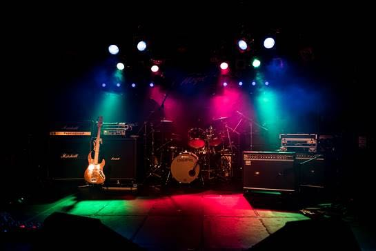
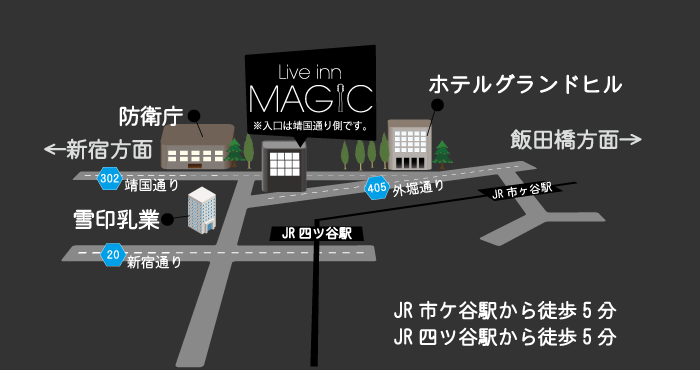

ACCESS
四谷 Live inn MAGIC [ライブインマジック]
http://liveinn-magic.com/

住所：〒162-0845 東京都新宿区市谷本村町3-19 千代田ビルB-1
電話番号：03-5261-8312
アドレス：info@liveinn-magic.com
営業時間：月～金 10：00～23：00 ／ 土日祝 9:00～23:00（※月～金は17：00までリハーサル小音になります）
※道に迷ったら防衛省の正門を目指してください！！すぐ向かい側になります。

※道が分かりづらい場合、ライブサイト公式ページよりＪＲ四ッ谷駅からの
行き方動画が掲載されているのでそちらの方をご確認して、お越しくださいませ。
その他詳細は以下のページからチェックすることが出来ます。